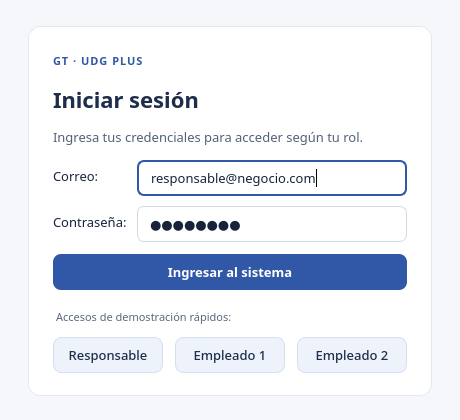
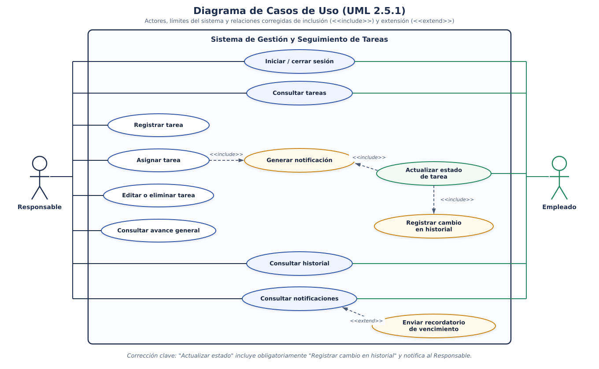

Registrar y asignar
El responsable crea actividades con descripción, fecha límite, prioridad y empleado asignado.
PROYECTO DE DISEÑO DE APLICACIONES · UDG PLUS
Sistema orientado a objetos para centralizar actividades, responsables, fechas límite, historial de cambios y notificaciones en un pequeño negocio.
01 · CONTEXTO Y PLANTEAMIENTO
En un negocio con 1 responsable y 3 empleados (atención a clientes, organización de mercancía, limpieza y revisión de productos), las indicaciones suelen comunicarse verbalmente, por mensajes sueltos o notas en papel.
Al no existir una única fuente de consulta, la información queda dispersa y resulta difícil verificar prioridades, fechas límite y avances reales.
02 · PROPUESTA Y POO
El responsable crea actividades con descripción, fecha límite, prioridad y empleado asignado.
Herencia de Usuario hacia Responsable y Empleado con permisos diferenciados.
Cada cambio de estado genera un registro inmutable en HistorialTarea.
Avisos automáticos por asignación, cambios de avance y recordatorios de vencimiento.
03 · GUI MICROSITIO / PROTOTIPO INTERACTIVO
Cambia de rol, registra o edita tareas con fecha límite, actualiza estados y verifica cómo se alimentan el historial y las notificaciones.
Seguimiento de actividades del pequeño negocio
| Actividad | Responsable | Prioridad | Fecha límite | Estado |
|---|
| Actividad y descripción | Responsable | Prioridad | Fecha límite | Estado | Acciones |
|---|
| Fecha y hora | Actividad | Anterior | Nuevo | Realizado por |
|---|
| Estado | Mensaje | Fecha | Acción |
|---|
Prototipo web de demostración con almacenamiento local en el navegador (localStorage). La aplicación nativa de escritorio utiliza POO en Python + PySide6 con base de datos SQLite.
04 · GUI DE ESCRITORIO REAL (PYTHON + PYSIDE6 + SQLITE)
Implementación 1:1 con el modelo UML. Explora las 5 pantallas capturadas directamente de la aplicación funcionando.

Autentica al usuario mediante correo y contraseña con hash, identificando si pertenece al rol Responsable o Empleado.
05 · DIAGRAMAS TÉCNICOS CORREGIDOS
Diagramas corregidos sin ambigüedades: incluye herencia en Usuario, inclusión obligatoria de HistorialTarea y carriles por rol.

Conecta ambos actores con sus acciones reales. "Actualizar estado" incluye obligatoriamente "Registrar cambio en historial" y notifica al Responsable.
Clase abstracta que modela atributos e inicio de sesión comunes a todo actor.
Datos privados (-) expuestos únicamente mediante métodos validados (+).
Especializan a Usuario agregando gestión administrativa u operativa.
Cada subclase responde con sus permisos reales ante la misma llamada de interfaz.